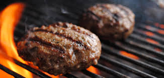
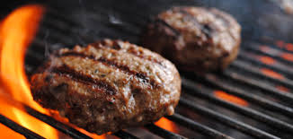

Meng het rundvlees met een flinke hoeveelheid suiker. Voor 400g heb je ongeveer 3-4 eetlepels nodig.
Rol het gehakt in je hand tot ballen van ongeveer golfbal grootte. Plet de ballen op het zilverfolie voorzichtig plat.
De `patties` moeten goed dun zijn, zo dun mogelijk. Met behulp van je vingers zorg je dat de rand niet uit elkaar valt.
Ze lijken misschien wat groot maar ze slinken tijdens het bakken. Dek de burgers af met folie en stop het in de vriezer voor 1-2 uur.